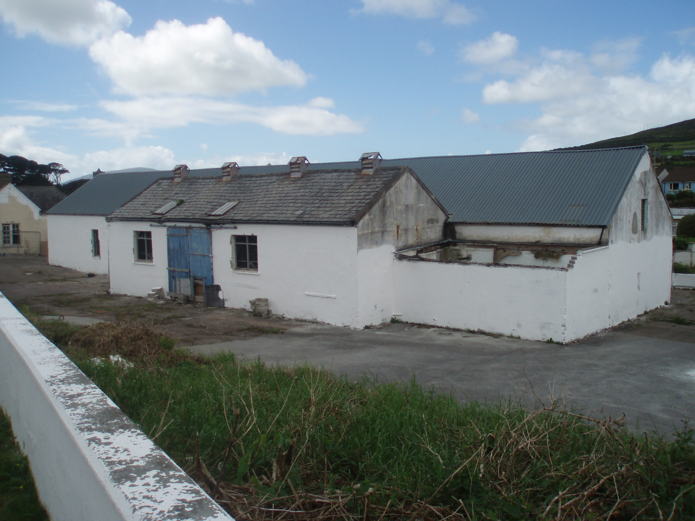

Page 2 of 3
Re: Dingle Distillery plans

Posted:
Thu Nov 12, 2009 2:00 amby varizoltan
what is wrong with Dingle? it is from Dingle
is there a problem with Midleton than? it is from Midleton
Re: Dingle Distillery plans
Posted:
Thu Nov 12, 2009 3:30 amby Fionnán
hahaha, well technically it's now officially from An Daingean, although that's a whole 'nother story... No, I agree with Michael that the name is a bit bland, although i must repeat that "Whale Tail" is a rather fantastic name for a whiskey.
Re: Dingle Distillery plans
Posted:
Thu Nov 12, 2009 3:33 amby Fionnán
as for that Midleton single malt, i had no idea that that was even out there. Michael, do you guys stock it at CWS? how is it?
Re: Dingle Distillery plans
Posted:
Thu Nov 12, 2009 7:47 amby JohnM
Fionnán wrote:as for that Midleton single malt, i had no idea that that was even out there. Michael, do you guys stock it at CWS? how is it?
I twas available in America for a while and a bottle pops up now and again. It's a six-year-old single malt - an average one.
Re: Dingle Distillery plans
Posted:
Thu Nov 12, 2009 10:35 pmby John
I take the point about the inventive beer-names, however; for whatever reason, I really hate those paddy-whackery names like 'Erin go Brath', or even Michael Collins, etc, etc. On the name/address; shouldn't it carry the 'Dingle-Daingean Uí Cuis' name or 'An Daingean' or something? Anyone know how the Dingle placename issue was resolved in the end? Is the distillery located within the Gaeltacht or no?
J.
Re: Dingle Distillery plans
Posted:
Fri Nov 13, 2009 8:33 amby Fionnán
John wrote:I take the point about the inventive beer-names, however; for whatever reason, I really hate those paddy-whackery names like 'Erin go Brath', or even Michael Collins, etc, etc. On the name/address; shouldn't it carry the 'Dingle-Daingean Uí Cuis' name or 'An Daingean' or something? Anyone know how the Dingle placename issue was resolved in the end? Is the distillery located within the Gaeltacht or no?
J.
As i understand it, the distillery's avoided the problem altogether by just giving itself two names, one in english and one in irish. As for the labels, yeah, hopefully the porterhouse marketers can come up with something more interesting than the Erin go brath breed...
Dingle Distillery plans
Posted:
Mon Dec 21, 2009 11:01 amby TheWhiskeyBro
Update in the Irish Times today
http://www.irishtimes.com/newspaper/fin ... 42591.htmlLooks like funding could be in place by the end of the year!!!
I wonder when the construction phase will start...
Re: Dingle Distillery plans
Posted:
Mon Dec 21, 2009 11:46 amby John
Why are they not fabricating their own stills?
J.
Re: Dingle Distillery plans
Posted:
Mon Dec 21, 2009 1:38 pmby DavidH
John wrote:Why are they not fabricating their own stills?
Does any distillery knock together its own stills rather than go to a specialist manufacturer?
Re: Dingle Distillery plans
Posted:
Mon Dec 21, 2009 2:34 pmby John
Fair enough.......

Re: Dingle Distillery plans
Posted:
Mon Dec 21, 2009 11:25 pmby DavidH
Every new still in these islands that I've heard mention of in recent years has come from Forsyths in Scotland. They really cornered the market (or just managed to be the last company standing, I don't know). Sadly the days when we could build a pot still (or a locomotive engine, or a giant telescope...) in this country seem to be far behind us.
I wonder who did build the giant stills of the old Irish factories.
Re: Dingle Distillery plans
Posted:
Tue Dec 22, 2009 12:08 amby IrishWhiskeyChaser
Even Forsyths build very few stills. The most common method is to recycle older stills of which I think they are still quite a few available from various closed distilleries.
I would imagine the Dingle Distillery maybe new stills as I'm guessing they are small stills but I would not be surprised if they were refurbed stills too.
The second still in Kilbeggan was a new still as it was made to order and the stills in Kilcomman were new stills but Ithese are quite small operations. I've not heard of any bigger stills made for larger operations but in all fairnes I've not kept a close eye on what is comming from Forsyths. I have a feeling there maybe another company like Forsyths but think they solely do repairs.
Re: Dingle Distillery plans
Posted:
Tue Dec 22, 2009 1:34 amby DavidH
IrishWhiskeyChaser wrote:Even Forsyths build very few stills. The most common method is to recycle older stills of which I think they are still quite a few available from various closed distilleries.
Distillery expansion must be some part of the market too. For example at Bushmills in recent years. I assume they take a template from the existing stills and have them reproduced so as not to change the nature of the spirit they are producing.
Bushmills is probably not an example of Forsyths' work, however, since Diageo has its own copper works in Alloa (where the Roseisle stills were made, I just discovered).
Re: Dingle Distillery plans
Posted:
Tue Dec 22, 2009 1:39 pmby IrishWhiskeyChaser
DavidH wrote:Distillery expansion must be some part of the market too. For example at Bushmills in recent years. I assume they take a template from the existing stills and have them reproduced so as not to change the nature of the spirit they are producing.
Good point Dave
DavidH wrote:Bushmills is probably not an example of Forsyths' work, however, since Diageo has its own copper works in Alloa (where the Roseisle stills were made, I just discovered).
Very interesting and quite logical as they own so many distilleries ... well spotted ... maybe this is the out fit I was thinking about as they don't exactly advertise for business

Is DIngle going to have 2 or 3 stills as you don't technically need 3 stills for triple distilation.
Re: Dingle Distillery plans
Posted:
Thu May 06, 2010 1:10 pmby Fionnán
Has anyone heard anything on this front? It seemed like they were ripping to go last year and had hopes of starting up with the new year... We're now almost halfway into 2010 and i havent heard a peep about them since december. Are they having financial or planning problems with the project?
Re: Dingle Distillery plans
Posted:
Thu May 06, 2010 1:57 pmby DavidH
I'd say the Porterhouse is more focused on its Shanghai EXPO launch this month.
Re: Dingle Distillery plans
Posted:
Thu May 06, 2010 2:41 pmby John
That's correct David. Porterhouse pulled off a bit of a coup in landing a catering contact for the China Expo 2010 and in addition to building an actual bar on the expo site, they will be overseeing the 'transfer' of that bar to Shanghai(?) where it will be more permanently located. So they have a bit on their plate at the moment.
That said, I'm also surprised that more information hasn't been forthcoming. I don't expect too much news from them given that it will be a number of years before they can produce saleable whiskey. It would help develop interest and a following if they managed a 'diary' or 'work in progress' blog! The Ardbeg marketing model might apply very well in their case.
Also, I heard a terrible rumour that they may initially be focusing on white spirits such as vodka, etc.

J.
Re: Dingle Distillery plans
Posted:
Thu May 06, 2010 3:19 pmby DavidH
John wrote:It would help develop interest and a following if they managed a 'diary' or 'work in progress' blog! The Ardbeg marketing model might apply very well in their case.
Don't get me started on Irish distilleries and the internet! They are thoroughly clueless in this regard.
Also, I heard a terrible rumour that they may initially be focusing on white spirits such as vodka, etc.
That's their
announced strategy. It makes a lot of sense for cashflow reasons.
Re: Dingle Distillery plans
Posted:
Tue Aug 17, 2010 12:00 amby TheWhiskeyBro
Any update from Oliver and the guys in the Porterhouse on the Dingle project!!!...
Re: Dingle Distillery plans
Posted:
Tue Aug 17, 2010 1:05 amby DavidH
Up and running already, if you go by the
Porterhouse China website...
Re: Dingle Distillery plans
Posted:
Tue Aug 17, 2010 10:09 amby TheWhiskeyBro
Thats right

saw that alright (for indexing purposes you know
) When does the expo end and the distilling begin, that's what I'm waiting for.
Re: Dingle Distillery plans
Posted:
Tue Aug 17, 2010 10:31 amby JohnM
They got the green light last November and they planned to have it up in 18 months... Don't know how it's progressing.
Re: Dingle Distillery plans
Posted:
Tue Aug 17, 2010 1:24 pmby glinner1
TheWhiskeyBro wrote:Any update from Oliver and the guys in the Porterhouse on the Dingle project!!!...
I spoke to a few people in Dingle about this project as I was quite interested in the whole venture. The actual building [the old creamery] seems to have been the subject of objections and the main local financier may not be in a position to go ahead - Beware... this is all 2nd hand info. I hope that the project does go ahead as it is a great idea.
Re: Dingle Distillery plans
Posted:
Mon Aug 23, 2010 5:38 pmby TheWhiskeyBro
On holidays in Kerry at the moment, so took a spin out to Dingle. Here is a picture of the prosed site where hopefully development will commence soon!
- 
- Proposed Site of Dingle Distillery
- P8230005.JPG (1.09 MiB) Viewed 3438 times
Re: Dingle Distillery Plans
Posted:
Mon Aug 23, 2010 5:50 pmby varizoltan
well, that picture not tell too much....